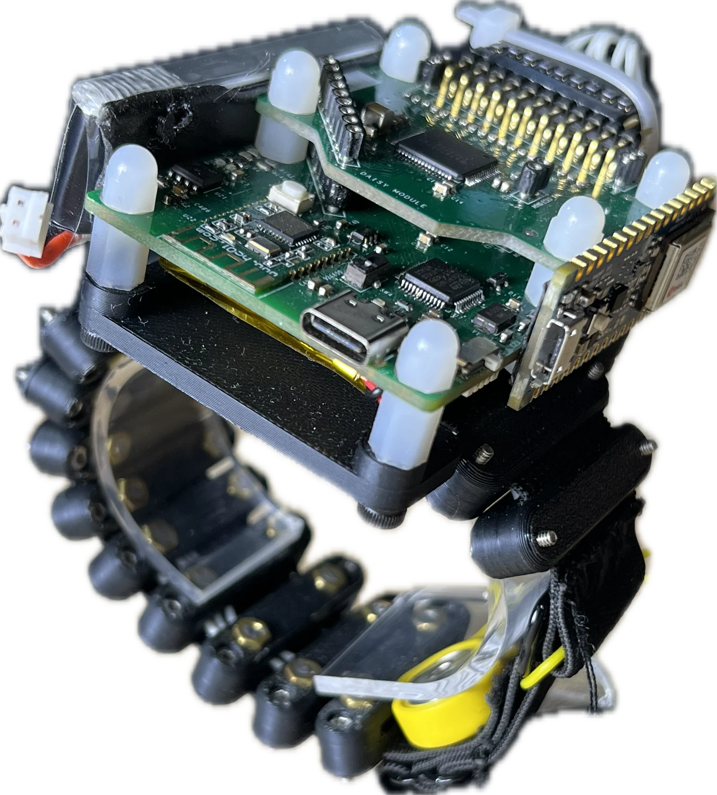

ForceBand
Learning Forceful Manipulation with sEMG
1Amazon FAR · 2University of Maryland · 3Johns Hopkins University · †Equal advising
Bring force into human data, for forceful manipulation.
Overview
Human demonstrations are a scalable data source for learning robot manipulation policies. However, common human demonstrations — such as motion-capture trajectories and internet videos — do not capture the contact forces that are critical for forceful manipulation. In this paper, we introduce ForceBand, a low-cost wrist-worn sEMG (surface electromyography) system for turning human muscle activity into force-enriched demonstrations. We first collect a 10-hour multimodal dataset containing egocentric video, sEMG, IMU, and fingertip forces across diverse actions and objects. Using this dataset, we pre-train an EMG2Force model that predicts per-finger forces from sEMG and IMU signals. After a short calibration, users can collect target-task demonstrations using only ForceBand and video; EMG2Force then labels these demonstrations with per-finger force traces, producing force-augmented demonstrations for robot policy learning. Experiments show that ForceBand recovers fine-grained fingertip interactions with over 50% lower force prediction error than vision-based baselines, and achieves an 87% success rate on pick, squeeze, and place tasks that require object-specific force control across objects with diverse shapes, sizes, and weights.
Robot-Data-Free
No teleoperation, no robot in the data loop — just natural human demos.
Force Beyond Vision
Muscles reveal forces cameras can't see — even on occluded fingers.
Free-Hand Force Sensing
Nothing on the fingertips during demos — the hand stays natural and visible.
Low Cost & Reproducible
As low as $300 — commodity parts, 3D-printed shell, open BOM.
Video
90 seconds, end to end
Hardware
Read finger forces at their source — the forearm muscles
Build our anatomically guided band for as low as $300, or use any 8-channel sEMG band with an IMU.
Muscle-aware by design
Low-noise
ADS-1299 front end — 0.14 µVrms, SNR 119.5.
Bipolar pairs
Suppress common-mode noise and motion artifacts.
Anatomically guided
8 channels: 7 finger muscles + 1 wrist flexion.
Reproducible
3D-printed, off-the-shelf parts, open BOM.

Open by design — built to extend
Off-the-shelf bands are locked: fixed channels, sealed, closed firmware.
Ours scales. The ADS1299 daisy-chains over one SPI bus — we added a second chip for a 16-channel band, same open BOM.
Dataset & Model
EMG2Force: muscles in, fingertip forces out
sEMG is noisy and personal. EMG2Force is pretrained once on 10 hours of paired data, then calibrated to each user in minutes.
A spectrogram-augmented transformer
5-second windows of 8-channel sEMG + a 10-D IMU stream at 250 Hz.
- Two views — STFT spectrogram (frequency) + raw streams (time).
- Transformer fusion — outputs one force trace per finger.
EMG2Force in the wild
The model, running live across everyday scenes — every clip pairs egocentric video with synchronized sEMG, IMU, and per-finger force.
10 hours, paired and diverse
Synchronized video + sEMG + IMU + fingertip force.
- Actions — pinch/grasp, pick&place, open/close, pour.
- Gestures — 2-, 3-, 5-finger, and in-the-wild.
- Objects — diverse shapes, sizes, weights. Public release planned.
Policy Learning
Three steps to a force-aware robot policy
Calibrate
~15 minutes of random play over varied objects, fingertip sensors on — adapts EMG2Force to your muscles.
Collect
Sensors off. Demonstrate with just ForceBand and video; EMG2Force labels per-finger forces.
Learn & deploy
Retarget to a parallel-jaw gripper and train a flow matching policy that predicts motion and force — zero-shot from human data.
Results
sEMG sees forces that vision cannot
ForceBand halves hand-level force error vs vision baselines (VISOR-HOS, FEEL) — and the gap widens on fingers vision can't read: ring PR AUC 0.763 vs 0.398, pinky 0.590 vs 0.314.
Why muscles beat pixels
- Occlusion-proof — hidden fingers still load their forearm muscles.
- Honest at the tail — vision collapses where contact is rare (prevalence 45% → 7%).
- Complementary — vision gives contact cues; muscles give magnitude.
Anatomy beats symmetry
Where you listen matters
More channels help (1.89 → 0.85 N MAE from 1 → 8) — and the anatomically guided layout beats an evenly spaced ring by a further 18% (0.77 vs 0.94 N).
Object-specific force, no force sensors at deployment
Pick–squeeze–place on a UR-5: nine objects, 43–650 g, grasp widths 1–72 mm, 15 demos each. ForceBand: 87%. Gripper-only baselines never produce the squeeze — the binary gripper scores zero on it.
Generalization Test
Citation
BibTeX
@article{he2026forceband,
title = {ForceBand: Learning Forceful Manipulation with sEMG},
author = {He, Botao and Wang, Zhi and Kuang, Linna and Ghosh, Ishaan and Malik, Jitendra and Fermuller, Cornelia and Wu, Tingfan and Mao, Jiayuan and Liu, Ruoshi and Qi, Haozhi and Aloimonos, Yiannis},
note = {Under review},
year = {2026}
}